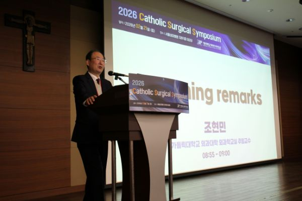
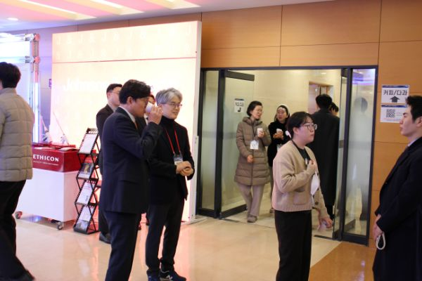
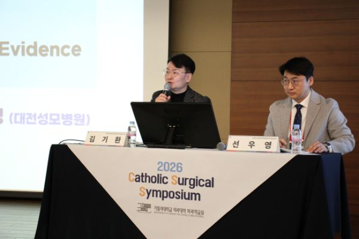

행사
2026 Catholic Surgical Symposium
- 일시
- 2026년 2월 21일(토)
- 장소
- 서울성모병원 지하1층 대강당
- 프로그램
- Symposium I: The Next Chapter: Key Surgical Practices and Young Surgeons Across CMC
- 특별강연 I: 초고령화 사회에서 외과의 미래를 준비하며 (박병태, 가톨릭대학교 보건의료경영대학원)
- Plenary Session: Highlighting of Key Research by Faculty Members of This Year
- Symposium II: Surgical Critical Care: Principles, Practice, and Current Evidence
- 특별강연 II: I’m A Surgeon, 수술실 40년 그리고 그 이후 (문인성, 가톨릭의대 명예교수)
- Video Session: The Most Interesting and Challenging Cases of the Year
- 시상식: 우수논문상, 우수비디오상



개회사 (조현민 주임교수) Symposium I (좌장 이인규·김상동)
Symposium I (좌장 이인규·김상동) Symposium I 발표
Symposium I 발표
휴식 시간 특별강연 I: 초고령화 사회에서 외과의 미래를 준비하며
특별강연 I: 초고령화 사회에서 외과의 미래를 준비하며 Plenary Session (좌장 백광열·황정기)
Plenary Session (좌장 백광열·황정기)
Symposium II (좌장 김기환·선우영) 특별강연 II: I’m a Surgeon (문인성 명예교수)
특별강연 II: I’m a Surgeon (문인성 명예교수) 특별강연 II
특별강연 II 시상식 (우수논문상·우수비디오상)
시상식 (우수논문상·우수비디오상) 축사 (전병무 동문회장)
축사 (전병무 동문회장) 강연장
강연장